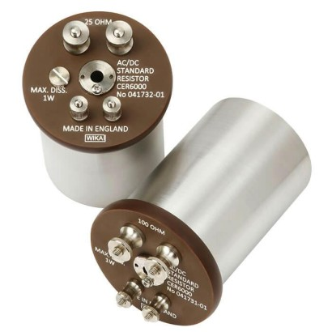
WIKA Model CER6000
Standard reference resistor
Bộ hiệu chuẩn áp suất, nhiệt độ, bơm tạo áp và đồng hồ chuẩn WIKA cho phòng thí nghiệm.
Chọn model để xem thông số, ứng dụng, datasheet và gửi yêu cầu báo giá WIKA chính hãng.

Standard reference resistor

Dead-weight tester
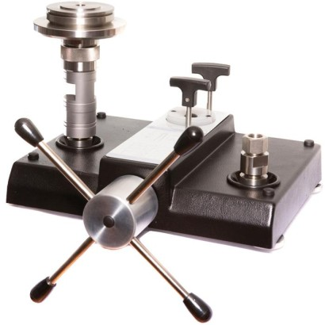
Dead-weight tester
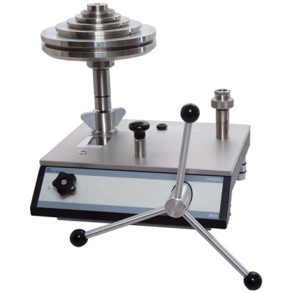
Dead-weight tester
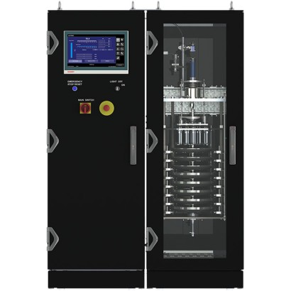
Pressure balance
Pressure controller
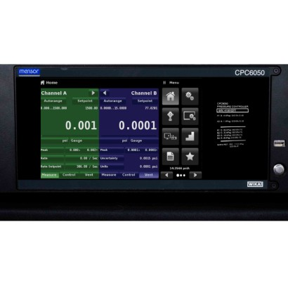
Pressure controller
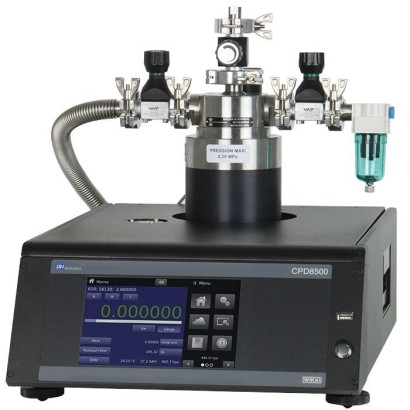
Digital dead-weight tester
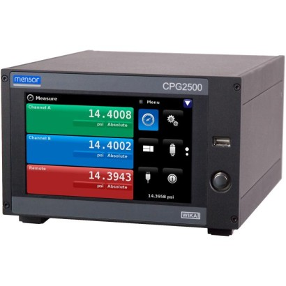
Precision pressure measuring instrument
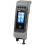
Portable process calibrator
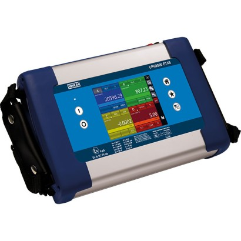
Portable multi-function calibrator
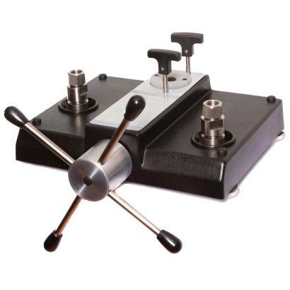
Hydraulic comparison test pump
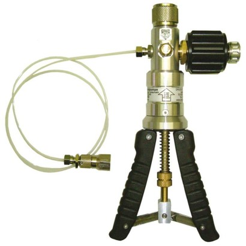
Pneumatic hand test pump
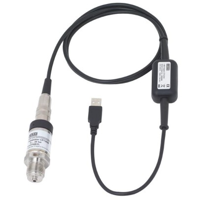
USB pressure sensor
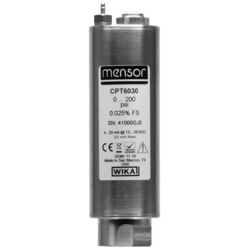
Analogue pressure transducer
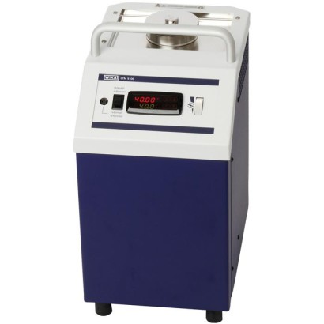
Micro calibration bath
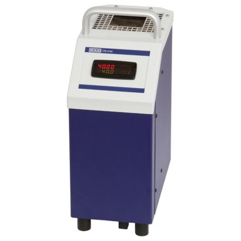
Temperature dry-well calibrator
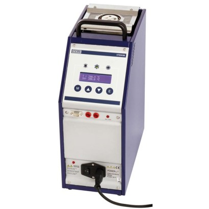
Temperature dry-well calibrator
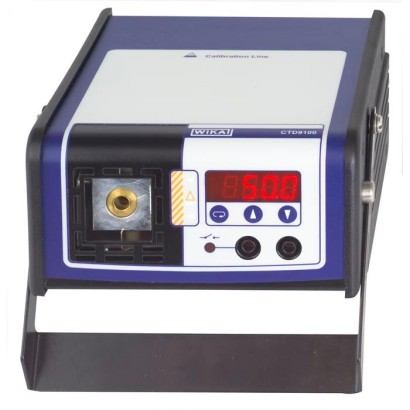
Temperature dry-well calibrator
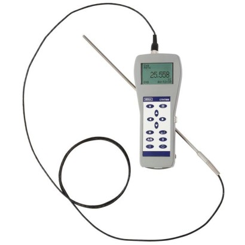
Hand-held thermometer
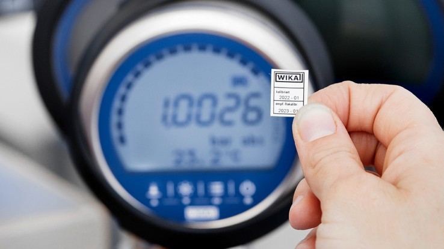
Hand-helds
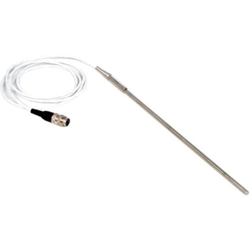
Reference thermometer
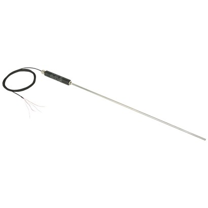
Reference thermometer
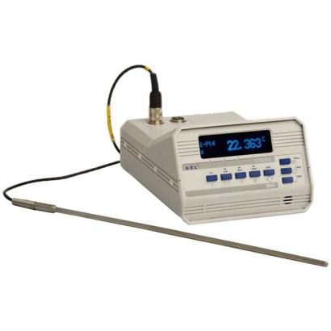
Precision thermometer
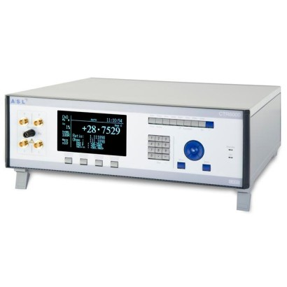
DC resistance thermometry bridge
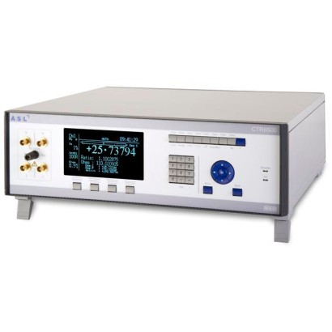
AC resistance thermometry bridge
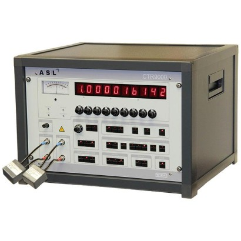
Primary-standard resistance thermometry bridge
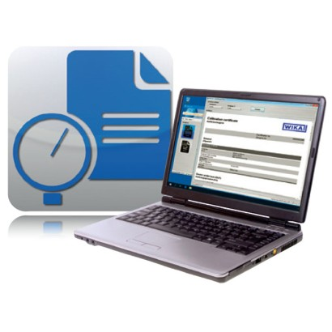
Calibration software
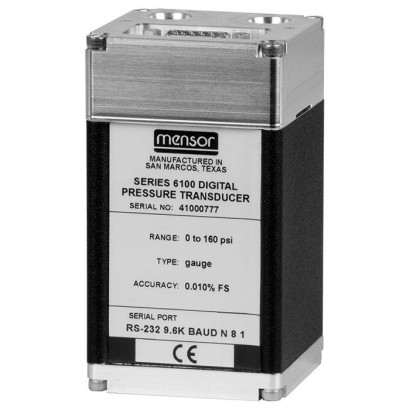
Precision pressure transducer
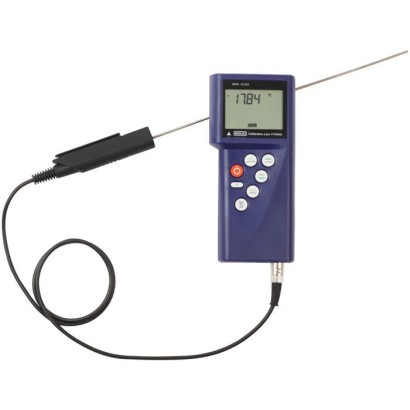
Hand-held thermometer
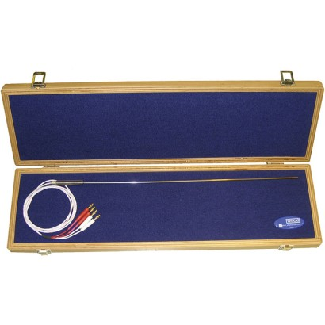
Standard thermometer